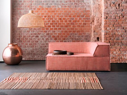

Мужской интерьер
Как правило, когда речь идет о создании интерьера, подразумевают универсальный вариант, т.е. помещение, в котором будет комфортно всем членам большой семьи. Этой теме посвящено множество статей в специализированных журналах и Сети. Мы же сегодня займемся оформлением помещения, в котором живет один человек, и этот человек - мужчина.
Дизайнеры говорят, что нет как такового универсального мужского интерьера, поскольку помещение всегда оформляют в соответсвии со вкусами, желаниями и предпоятениями хозяина. Тем не менее, у квартир холостяков есть особенности, которые вряд ли встретишь в интерьере, где живут женщины.
Стиль
Представители сильной половины человечества ценят простоту и лаконичность. Именно поэтому оформить интерьер разумно в стиле лофт, хай-тек, минимализм.
-

Лофт
-
Хайтек
-
Минимализм
Цвет
Мужской интерьер отличает преобладание спокойной палитры. В квартире холостяка не должно быть кричащих оттенков. Оптимальными цветами считаются коричневый, серый, кирпичный, черный, зелёный и синий.

Последние идеально подойдут в качестве акцентных. К примеру,
яркими пятнами могут оказаться стулья для гостинной.
Слишком
светлая мужская комната – это скорее исключение, нежели правило.
Мебель
Все мужчины прагматики, поэтому и мебель в их квартире должны быть соответствующей, т.е. максимально функциональной. Чтобы избежать беспорядка следует организовать продуманную систему хранения. Так, вместо открытых полок лучше обустроить скрытые ниши, за дверьми которых удастся спрятать массу нужного и ненужного в быту.
Безрассудно тратить квадратные сантиметры свободной площади, заставляя помещение лишней мебелью. Как правило, мужчинам достаточно большой кровати из массива дерева, раскладного дивана, компьютерного стола с удобным креслом и стола на кухне. Отличным решением станет организовать гардероб вместо традиционного шкафа для одежды, ведь тогда по утрам не придется утюжить рубашки, брюки и пиджаки – они аккуратно будут развешены.
Фактуры
Никаких воздушных тюлей, подушек с оборками на диване и пушистых ковров на полу в настоящем мужском интерьере быть не должно.
-
Лучшее напольное
покрытие Натуральное дерево (паркет
или ламинатная доска) -
Наилучшая отделка
для стен Декоративная штукатурка, обнаженная
кирпичная кладка или бетонное полотно -
Идеальный обивочный
материал для дивана Кожа или мешковина -
Оптимальное
украшение окон Тяжелые льняные портьеры
Декор
Без аксессуаров интерьер будет казаться незавершенным.
Но в этом вопросе главное – мера.
В брутальном интерьере нет
случайных элементов
декора – любая картина, статуэтка и
фотография
несут смысловую нагрузку и завершают общую
композицию.
Идеальным вариантом могут стать
коллекция оружия, музыкальный
инструмент,
спортивный инвентарь, рога дикого животного
и т.п.
Здесь нужно полагаться на собственный вкус
и образ жизни.